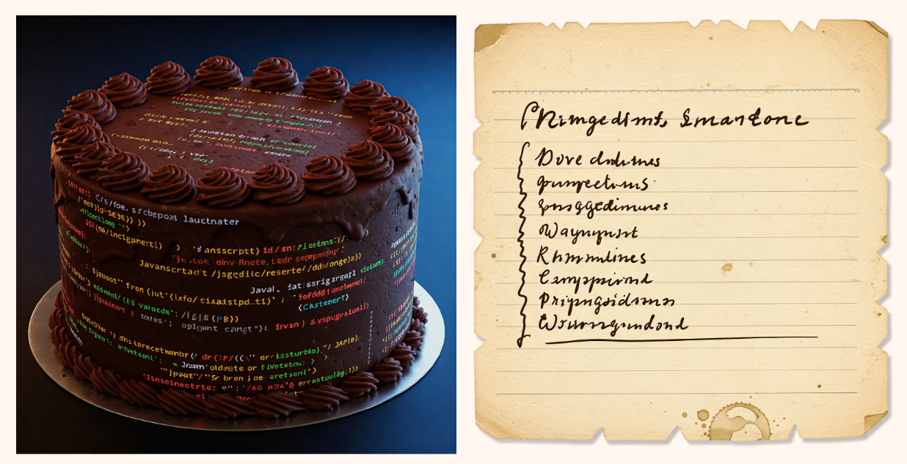

By Scott McGee, Senior DevSecOps Engineer
Correction: The previous version of this article mentioned Drupal contributed modules got CVEs on a delay, that has since been improved, thanks in large part to Greg Knaddison and the Drupal security team.
At CivicActions we make security a priority, not just during development, but also during the long maintenance tail.
Do you or your customer ever wonder what’s in the software product that you delivered to your customer? What libraries are embedded in that critical piece of software that you use to drive your website? How do we secure our software supply chain?
In a world where attacks are cheap and easy, knowing what’s in your system can help give you an edge over an attacker that can automate exploits. The attackers don’t have to know what software versions you’re running, just whether it can be exploited. You absolutely need to know whether your system has vulnerable components, and to do that, you first have to know what’s embedded in your software. Knowing what you’re running allows you to mitigate any known vulnerabilities.
The requirements to generate and deliver an SBOM (Software Bill of Materials) are part of President Biden’s 2021 “Executive Order on Improving the Nation’s Cybersecurity” — EO 14028. In the future, the federal government will require SBOMs for all software, in order to secure the software supply chain. Subsequently, the NTIA published the minimum standards for an SBOM and CISA/DNI/NSA and others published Securing the Software Supply Chain: Recommended Practices for Software Bill of Materials Consumption.
We weren’t seeing requirements to deliver SBOMs in government contracts when we started working on this, but they are starting to show up in new contracts.
What Is an SBOM?

An SBOM (Software Bill of Materials) is a listing of all the software components on a system, container image or in an application. It includes all of the supporting libraries that are normally embedded and not advertised to be part of the software. Think of it like an ingredient list for food you buy from the grocery store. The government should know what’s actually in that chocolate cake they just bought.
Tracking Vulnerabilities the Old Way
In the recent past, tracking vulnerabilities was painful and prone to oversights.
In our example, we’re running Red Hat Enterprise Linux on multiple cloud servers, using a common hardened base OS image. Multiple times a month, we re-deploy the servers using the latest updates from Red Hat. This covers a large portion of the deployed software, without us needing to keep track of every vulnerability in each installed package. We just create a new hardened OS image and test the latest, before deploying to Production.
However, the remaining application software is a complex ecosystem of modules, with embedded dependent libraries, often spanning multiple programming languages. Tracking vulnerabilities in application software is much more difficult, with so many moving parts. Additionally, we receive vulnerability notifications for some components, but not all. Some notifications come from our Customer’s cybersecurity shop, but not for everything we’re running. Often, updates to application software were driven more by desired bug fixes than known vulnerabilities.
SBOMs and Dependency Track
The first task was researching and testing various SBOM generating tools. We found that Syft provided the best general purpose results. It supports both filesystem scans within operating systems and container scans. We also evaluated Trivy, Scancode Toolkit and CDXgen.
Next, we worked on automating the generation of CycloneDX format SBOMs using Syft and adding that as a regular task in our CI/CD (Continuous Integration / Continuous Delivery) pipelines. Each time we perform an update to our production environment, we also capture an SBOM from each system.
Then, we worked on deploying Dependency Track, a free and open source “Continuous SBOM Analysis Platform”. Dependency Track ingests SBOMs and periodically compares the components list and versions against publicly available vulnerability databases, such as the National Vulnerability Database, Github Advisories and OSV Advisories.
In Dependency Track, we created a project for our websites and 4 sub-projects, one for each cloud server. Our CI/CD pipeline runs Syft to generate an SBOM for each server, then uploads them to Dependency Track. Dependency Track compares the software components and versions against the vulnerability databases nightly and updates the set of vulnerabilities per sub-project.
As a bonus, Dependency Track also helps us track Free and Open Source (FOSS) and commercial software licenses and compliance.
Due to the current limitations of alerting in Dependency Track, there’s not an easy way to set up push notifications for new vulnerabilities at a certain criticality. We were able to create a policy for just critical vulnerabilities, but then we would receive Slack notifications for the full set of critical vulnerabilities each day. Alternatively, it’s possible to set up a notification for all new vulnerabilities, just not a particular threshold.
Using Dependency Track
Tracking vulnerabilities using Dependency Track is more thorough than before, when we didn’t have insight into all of the embedded libraries and associated vulnerabilities. We still routinely update our Red Hat Enterprise Linux operating system to the latest available, but now we also have visibility into vulnerabilities in our application software.
Dependency Track uncovered critical vulnerabilities that we weren’t aware of. Multiple times a month, we review the new vulnerabilities on each server in Dependency Track. Each vulnerability links to a CVE for investigation. Each server’s vulnerabilities can be triaged, marked as false positives and hidden, or exploitable with notes and an audit trail. Any valid vulnerabilities drive new maintenance work to test and update those components.
Case Study: Log4j
How many pieces of software you’re running contain Log4j libraries? It’s not an easy question to answer. Many admins had never heard of Log4j before the Log4Shell vulnerability was announced, let alone knowing that they were using it. Log4j libraries won’t show up in a list of installed packages because it’s embedded in other applications. The old fashioned method would have been to run a `find` command against the entire filesystem of your server and see what comes up.
With an SBOM and analysis software, you have ready access to answer the question of where Log4j is used. Using Dependency Track, we can search for a component name and it will return all the systems that have that component installed and the versions they are running.
Challenges
Challenge: Not all government agencies are actively requesting or able to make use of SBOMs. During a recent ATO (Authority to Operate) renewal, a software list was requested, but when an SBOM was provided, the SCA (Security Control Assessor) didn’t know how to make use of it and requested a smaller summary of just the critical software components on the system.
Possible solution(s): Over time, NIST should roll out compliance requirements around generating and delivering SBOMs, and this will flow down to the various government agencies. A related consideration is after the passing of H.R.9566–118th Congress (2023–2024): SHARE IT Act, as agencies share software they will need to know what is the full picture of that software and SBOMs will be a useful way to know that.
Challenge: The false positive rate for Dependency Track is pretty high, with old vulnerabilities being ‘rediscovered’ often. This is especially true with Red Hat Enterprise Linux, where they backport fixes to older versions of software. Dependency Track alerts are based on the advertised ‘fix version’ not taking into account vendor specific backports of the fixes.
Possible solution(s): Dependency Track is open source, so anyone could create a merge request taking Red Hat’s patching model into account and improve the determination of when a vulnerability applies.
Challenge: Monitoring and alerting on new vulnerabilities using Dependency Track. Currently, there’s not an easy way to configure Dependency Track to just alert on new critical vulnerabilities for a Project.
Possible solution(s): Currently it’s a periodic, manual task to review and triage new vulnerabilities. Dependency Track is open source, so anyone could create a merge request that enhances the alerting capabilities.
Challenge: Previously, the Drupal security team only generated security alerts and CVEs for Drupal Core, but contributed modules didn’t get security alerts. Because of this, contributed modules weren’t identified as vulnerable in Dependency Track.
Possible solution(s): Contrib modules now get their own CVEs. This was improved in 2025 thanks to the Drupal security team, in particular security team member Greg Knaddison. However, there may be other small libraries/modules that don’t have a security team to generate security alerts. These will have to be mitigated and monitored on an individual basis.
Challenge: Dependency Track has a character limit of 255 characters on the PURL field (package url), among others. Recently, our Customer started deploying an RPM on all of our systems with a long name (81 characters), which results in a PURL of 276 characters. This breaks the importing of our SBOMs into Dependency Track. Note: The CylconeDX format does not specify a character limit on those fields.
Possible solution(s): Push for resolution of Dependency Track Issue #1665. Try out alternative SBOM generating tools and see if they can either truncate the PURL field or allow for excluding specific RPMs from the inventory. Even with RPMs excluded, Syft still includes all binaries on the system in the generated SBOM.
What’s next
Overall, we were able to improve the security of our website by being aware of all components we have deployed and being alerted when there’s a vulnerability against any of them. But the manual nature of checking Dependency Track needs improvement.
References
- Executive Order EO14028 (2021) — Executive Order on Improving Cybersecurity — Supply Chain Security
- NTIA’s minimum standards for a SBOM
- CISA/NSA/Supporting Partners — Securing the Software Supply Chain: Recommended Practices for Software Bill of Materials Consumption
- CycloneDX format SBOMs
- H.R.9566–118th Congress (2023–2024): SHARE IT Act